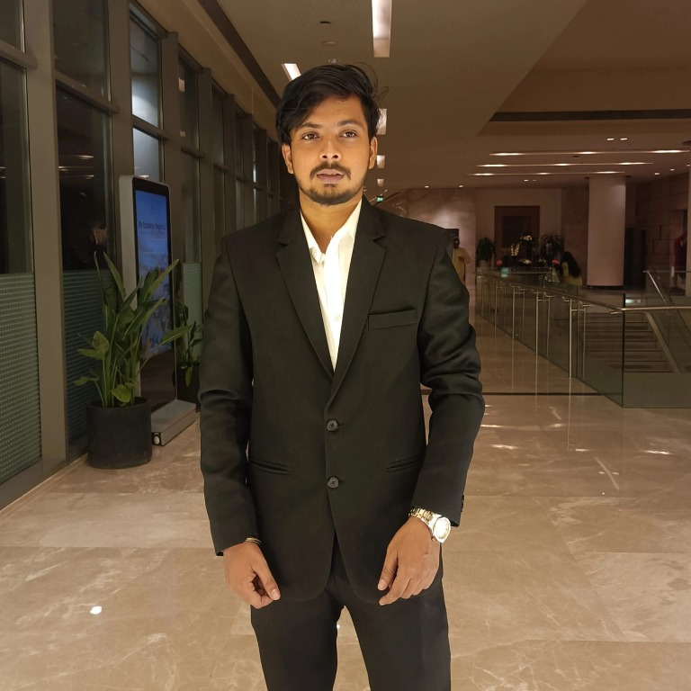

CORESW-01SW-02RTR-01USERSSERVERS
NETWORK DESIGN / CISCO / VLAN01IT ADMINISTRATOR / LINUX SYSTEMS SPECIALISTPUNE, MAHARASHTRA, INDIA ↗
HELLO, I’M KETAN
Keeping systems
secure, stable &
connected.
I manage Linux servers, office networks and secure access—helping teams stay online, productive and protected.

SYSTEMS THINKER
BASED IN PUNE, INDIA
KD / 01BASED IN PUNE, INDIA
LINUX · NETWORKING · SECURITYSCROLL TO EXPLORE ↓
01 / SELECTED TECHNICAL WORKReliable by design.
Reliable by design.
Secure by default.
Hands-on systems and network work
built around real operational needs.
$ systemctl status apache2
● apache2.service — active (running)
Loaded: enabled · Uptime: 99%
$ sudo ufw status
Status: active
● apache2.service — active (running)
Loaded: enabled · Uptime: 99%
$ sudo ufw status
Status: active
✓
ENCRYPTED
REMOTE ACCESS
WIREGUARD / HARDENING / BACKUPS03REMOTE ACCESS
WORKED WITHTaj IT SolutionsIT ADMINISTRATION · 2025—2026
02 / ABOUT KETANCurious about
Curious about
how things work.
Serious about
keeping them up.
Technology has always interested me because every problem presents an opportunity to learn and improve a system. As an IT Administrator and Linux Systems Specialist based in Pune, Maharashtra, I enjoy troubleshooting network issues, managing Linux environments, and strengthening infrastructure security.
In my recent role at Taj IT Solutions, I supported internal infrastructure for 50+ users, managed Linux services and helped keep day-to-day operations dependable.
Let’s talk about your IT needs Send me a note ↗CURRENT FOCUS
Linux & infrastructure
Server administration, network reliability and secure operations.
BASED IN
Pune, India
Open to opportunities in IT support, Linux administration and networking.
EDUCATION / 2021—2025Bachelor of Engineering
Bachelor of Engineering
in Information Technology
Sant Gadge Baba Amravati University
03 / SKILLS & TOOLKITPractical skills.
Practical skills.
Useful tools.
Built through hands-on administration, project work and a steady habit of learning.
01
Operating systems
RHELUbuntuDebianWindows
02
Networking
TCP/IPVLANOSPFEIGRPDNS / DHCPMikroTikVPN
03
Automation & scripting
BashPythonYUM / DNFcronSQL
04
Security & operations
SSHWireGuardFirewallsSELinuxNmapWiresharkLog analysisBackups
CERTIFICATION & LEARNING
Red Hat Certified System AdministratorRHCSA
CCNA & CEHPREPARING
04 / CONTACTLet’s keep
Let’s keep
good systems
running.
Looking for an IT administrator who cares about the details? I’d be glad to hear from you.
PUNE, MAHARASHTRA, INDIAKDDANGE4@GMAIL.COM